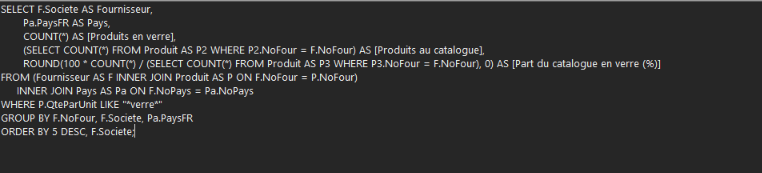
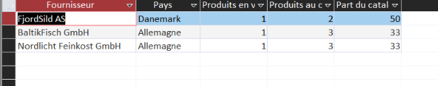

Contexte
L’objectif de cette troisième et dernière mission est d’exploiter la base de données de l’entreprise KDou pour produire des indicateurs calculés pertinents.
Proposition d’indicateurs
Hajar
Quels fournisseurs proposent des produits conditionnés en verre, dans quels pays sont-ils situés, et quelle part de leur catalogue cela représente-t-il ? L’objectif est d’identifier les partenaires les plus adaptés à une offre d’emballages recyclables.


Mélina
Quels sont les produits les moins vendus chez chaque fournisseur ? Cet indicateur permet à Kdou de repérer les produits qui ont le moins de succès auprès des clients. Une fois identifiés, Kdou peut décider de les retirer de l'offre ce qui permettrait de réduire ses coûts en plus de diminuer drastiquement le gaspillage alimentaire.